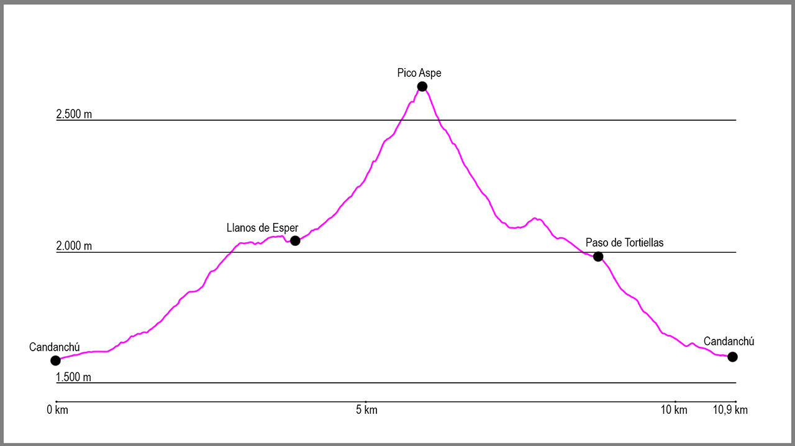

Desde el aparcamiento de Pista Grande en Candanchú, tomaremos la pista que sale en dirección oeste. Seguiremos en esta dirección hasta llegar al circuito de esquí de fondo y dejar a la derecha el estadio de biatlón. Al poco de pasarlo la pista empieza a subir y gira en dirección norte, momento en el cuál sale a nuestra izquierda un sendero marcado con un punto azul. Desde aquí empieza la subida por Loma Verde.
Primero seguiremos en dirección oeste para tras apenas unos 200 metros girar en dirección sur, donde empieza un camino bastante cómodo que nos hará ganar altura progresivamente. Pronto llegaremos a un pequeño barranco donde tendremos que tener cuidado al pasarlo, y poco después a la cueva de los Contrabandistas. Justo pasado este punto el camino gira 90 grados a la izquierda de forma brusca (importante no seguiré recto) para seguir ascendiendo hacia una zona de campas de hierba.
Después de una cómoda subida hasta este punto, empieza una zona de piedras donde tendremos que poner varias veces las manos en las rocas para ayudarnos a progresar y tras poco más de un kilómetro daremos vista al valle del Aspe.
Llegados a este punto tendremos que tomar como referencia el collado occidental del Aspe, y dirigirnos siempre hacia él. Lo que al principio es una sucesión de campas de hierba, pronto da paso a una gran pedrera de bloques de roca donde los hitos serán nuestra mejor guía.
Remontaremos inicialmente una pequeña pendiente para divisar el collado occidental del Aspe y mantendremos altura a media ladera para adentrarnos en el valle, dejando a nuestra derecha las marcas de GR que se van en dirección este, y dirigirnos hacia los neveros del Aspe. Cuando lleguemos debajo de las paredes del collado empezaremos a ascender por la pedrera, pero a mitad de ella tendremos un giro de 45 grados a nuestra derecha para pasar a subir por encima de las piedras que nos servirán de referencia. Justo ahora seguiremos hacia el collado para afrontar el último tramo y llegar al collado occidental del Aspe, donde giraremos a nuestra izquierda. Una vez en este punto afrontaremos la última parte de la subida hasta la cima del pico Aspe, donde tendremos que extremar la precaución en los últimos metros, justo antes de llegar al collado del Tubo del Aspe y en los últimos 100 metros de ascensión, donde volveremos a echar las manos a la roca en algún tramo para llegar a la cumbre.
Una vez en la cima comenzará nuestro descenso. Bajaremos con precaución hasta volver a llegar al Tubo del Aspe y aquí giraremos a la derecha para descender por él. La primera parte es por una zona de piedra suelta, pero enseguida saldremos hacia la derecha y el camino poco a poco va mejorando. Aquí empieza un tramo de bajada bastante más cómodo que nos llevará hasta el barranco de Tortiellas. Aquí, en lugar de seguir descendiendo y dirigirnos hacia las campas de hierba, iremos poco a poco girando a nuestra izquierda hasta situarnos debajo de una gran roca de piedra que recorreremos por la parte inferior. Una vez acabe llegaremos a una pequeña subida que nos conducirá hasta otra repisa de roca, donde mantendremos altura y casi al final de la misma saldremos de ella para dar vista a la estación de esquí de Candanchú. Aquí descenderemos hacia un gran plano que tenemos enfrente nuestro y saldremos de él en dirección norte para llegar a las pistas de esquí.
En este momento tomaremos de referencia la pista para vehículos hasta que esta gira a la derecha y ante nosotros se abre el paso de Tortiellas, por donde descenderemos en dirección norte hasta que lleguemos a varios telesquís y divisemos de nuevo la pista de inicio de la ruta, la cuál esta vez cogeremos hacia nuestra derecha, de forma descendente, y nos llevará hasta el punto de inicio.
